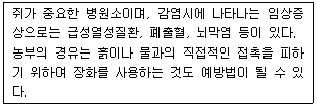
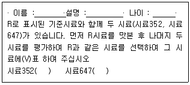

식품기사 (2009-03-01 기출문제)
1과목: 식품위생학
1. 식품에 사용이 가능한 타르색소가 아닌 것은?
- 식용색소 적색 제2호
- 식용색소 황색 제4호
- 식용색소 황색 제5호
- 식용색소 녹색 제1호
(정답률: 65%)

2. 식품의 제조·가공 중에 생성되는 유해물질에 대한 설명으로 틀린 것은?
- 벤조피렌(benzopyrene)은 다환방향족 탄화수소로서 가열처리나 훈제공정에 의해 생성되는 발암물질이다.
- MCPD(3-monochloro-1,2-propandiol)는 대두를 산처리하여 단백질을 아미노산으로 분해하는 과정에서 글리세롤이 염산과 반응하여 생성되는 화합물로서 발효간장인 재래간장에서 흔히 검출한다.
- 아크릴아마이드(acrylamide)는 아미노산과 당이 열에 의해 결합하는 미이야르 반응을 통하여 생성되는 물질로 아미노산 중 아스파라긴산이 주 원인물질이다.
- 니트로사민(nitrosamine)은 햄이나 소시지에 발색제로 사용하는 아질산염의 첨가에 의해 발생된다.
(정답률: 70%)
3. 실내 환경의 세균 오염도를 측정하기 위하여 공중낙하세균검사를 하려고 할 때 어떤 배지를 사용해야 하는가?
- Lactose broth
- Endo agar
- EMB agar
- Plate count agar
(정답률: 76%)
4. 헤테로고리 아민류(heterocyclic amine)에 대한 설명을 틀린 것은?
- 탈 정도로 구운 육류 및 그 제조가공품에서 생성된다.
- 강한 돌연별이 활성을 나타내는 물질을 함유한다.
- 단백질이나 아미노산의 열분해에 의해 생성된다.
- 변이원성 물질을 일반적인 조리온도보다 낮은 온도로 구울 때 많이 생성된다.
(정답률: 79%)
5. Sodium L-ascorbate는 주로 어떤 목적에 이용되는가?
- 살균작용은 약하나 정균작용이 있으므로 보존료로 이용된다.
- 산화방지력이 있으므로 식용유의 산화방지 목적으로 사용된다.
- 수용성이므로 색소의 산화방지에 이용된다.
- 영양 강화의 목적에 적합하다.
(정답률: 64%)
6. 식품의 살충, 살균 등의 목적으로 사용되는 방사선 중 조사기간이 되는 것은?
- 가시광선
- α
- β
- γ
(정답률: 92%)
7. 산화방지제의 효과를 강화하기 위하여 유지 식품에 첨가되는 효력 증강제(synergist)가 아닌 것은?
- tartaric acid
- propyl gallate
- citric acid
- phosphoric acid
(정답률: 68%)
8. 미생물에 의한 부패에 대한 설명으로 틀린 것은 ?
- 미생물에 의하여 식품의 변색, 가스발생, 점액생성, 조직연화 등 부패 현생이 나타난다.
- 식품의 부패를 예방하기 위하여 법적으로 사용이 허용되어 있는 초산, 안식향상, 프로피온산, 구연산 등의 보존료를 사용할 수 있다.
- 냉동처리를 하면 식품의 표면건조를 통해 미생물의 생육을 정지시키며, 사멸을 유도 할 수 있다.
- 부패균은 식품의 종류에 따라서 다르다.
(정답률: 90%)
9. 식품의 잔류 농약에 관한 설명 중 틀린 것은?
- 수확 직전 살포시 식품에 대량 잔류할 수 있다.
- 급성독성시 문제시 되며, 만성독성은 발생하지 않는다.
- 사용이 금지된 것도 환경내에 어느 정도 잔류하여 오염될 수 있으므로 계속적인 모니터링이 필요하다.
- 농약에 오염된 사료로 사육한 동물의 우유 등에도 잔류할 수 있다.
(정답률: 91%)
10. 인수공통전염병에 대한 설명으로 틀린 것은?
- 사람과 동물 사이에 동일한 병원체에 의해 발생되는 질병 또는 감염상태
- 병에 걸린 육류 또는 젖을 섭취시 감염될 수 있음
- 결핵, 파상열 등이 속함
- 탄저병은 브루셀라균에 의해 발생됨
(정답률: 79%)
11. 유전자 재조합식품의 안전성 평가를 위한 일반적인 조사에 해당하지 않는 것은?
- 건강에의 직접적 영향(독성)
- 유전자 재조합에 의해 만들어진 영양 효과
- 유전자 도입 전 식품의 안전성
- 알레르기 반응을 일이키는 경향
(정답률: 75%)
12. mycotoxin의 종류가 아닌 것은?
- patulin
- sterigmatocystin
- fusariumtoxins
- lipovitellin
(정답률: 55%)
13. 식품 중의 포름알데히드(formaldehyde)검사에서 chromotropic acid 반응의 정색은?
- 가온시에 자색으로 변한다.
- 가온시에 적색으로 변한다.
- 냉각시에 흑색으로 변한다.
- 냉각시에 백색으로 변한다.
(정답률: 70%)
14. 식품첨가물공전 총칙의 내용으로 틀린 것은?
- “용액”이라 기재하고 특히 그 용제를 표시하지 아니한 것은 수용액을 말한다.
- 중량백만불율은 ppm의 약호를 쓴다.
- “찬곳”이란 함은 따로 규정이 없는 한 -4~0℃의 장소를 말한다.
- 표준온도는 20℃로 한다.
(정답률: 72%)
15. 공장폐수에서 발생할 수 있는 유해물질 및 식품오염문제를 연결한 것으로 틀린 것은?
- 석유폐수→ 3,4 - benzopyrene → 발암물질 발생
- 광업소폐수 → 카드aba(Cd) → 미나마타병 발생
- 펄프공장폐수 → 타르(tar) → 조개류의 쓴맛 유발
- 구리정련공장폐수 → 구리(Cu) → 녹색 굴 발생
(정답률: 72%)
16. 장염 비브리오균에 대한 설명 중 틀린 것은?
- 내열성이 작은 균으로 이열성 및 내열성 용혈독소가 없다.
- 3~4%의 식염농도에서 잘 생육하며 해수온도가 15℃ 이상이 되면 급격히 증식한다.
- 그람음성 간균으로 포자를 형성하지 않는다.
- 식중독의 증세는 복통, 설사, 발열, 구토이다.
(정답률: 62%)
17. HACCP의 7가지 원칙에 해당하지 않는 것은?
- 모니터링 방법 설정
- 검증방법 설정
- 기록유지 및 문서관리
- 공정흐름도 현장확인
(정답률: 81%)
18. 라면 등의 식품에서 지나친 건조에 의해 발생할 수 있는 가장 중요한 위생물질은?
- 지방의 산화
- 단백질의 변성
- 전분의 노화
- 무기질 산화
(정답률: 79%)
19. 식품용기의 도금이나 도자기의 유약성분에서 용출되는 성분으로 칼슘(Ca)과 인(P)의 손실로 골연화증을 초래할 수 있는 금속은?
- 납
- 카드뮴
- 수은
- 비소
(정답률: 66%)
20. 아래에서 설명하는 인수공통전염병은?

- 리스테리아증
- 렙토스피라증
- 돈단독
- 결핵
(정답률: 88%)
2과목: 식품화학
21. 부제탄소원자를 가지지 않아 2개의 광학이성체가 존재하지 않는 중성아미노산은?
- isoleucine
- threonine
- glycine
- serine
(정답률: 74%)
22. 식이섬유의 작용과 관계가 없는 것은?
- 장의 기능을 조절하여 변비를 억제할 수 있다.
- 장내 비피더스균의 생육을 촉진하여 정장작용을 한다.
- 소장에서 당 흡수를 지연시켜 혈당상승을 억제한다.
- 장내 발암물질을 흡수하여 빨리 배설시키는 효과가 있다.
(정답률: 56%)
23. GC와 HPLC에 대한 설명으로 틀린 것은?
- GC는 고감도의 검출이 가능하다.
- GC는 고정상과 이동상의 선택성이 있다.
- HPLC는 시료를 비교적 쉽게 회수할 수 있다.
- HPLC는 pH안정성이 있다.
(정답률: 69%)
24. alanine이 Strecker 반응을 거치면 무엇으로 변하는가?
- acetic acid
- ethanol
- acetamide
- acetaldehyde
(정답률: 69%)
25. 비타민 D의 함량이 가장 많은 식품은?
- 방어간유
- 쇠고기
- 달걀
- 돼지고기
(정답률: 83%)
26. 아래의 관능검사 질문지는 어떤 관능검사인가?

- 단순차이검사
- 일-이점검사
- 삼점검사
- 이점비교검사
(정답률: 88%)
27. 단백질 가열시 발생하는 열변성에 가장 영향을 적게 주는 인자는?
- 온도
- 수분함량
- 유화제 함량과 종류
- 전해질의 종류와 농도
(정답률: 60%)
28. 콩의 특징에 대한 설명으로 틀린 것은?
- 콩에는 올리고당이 풍부해 대장암을 예방하는 효과가 있다.
- 불포화지방산인 레시틴이 많아 뇌중풍과 치매를 예방하며, 레시틴은 신경세포의 활동에 관여하는 신경전달물질 아세틸콜린의 원료이다.
- 피트산은 항산화 및 해독 작용을 하며, 콩나물에 많은 것으로 알려진 아스파라긴은 숙취해소에 도움이 된다.
- 효소 아스코르빈산 옥시다아제가 있어 비타민 C의 환원을 억제하는 기능이 있다.
(정답률: 59%)
29. 레올로지의 특성에 대한 설명으로 옳은 것은?
- 토마토 케첩은 Newtonian 액체이다.
- 아주 묽은 시럽은 non-Newtonian 액체이다.
- 버터나 마가린은 소성(plasticity)을 갖고 있다.
- 달걀 흰자위에 젓가락을 넣어 당겨 올리면 실처럼 따라 올라오는 성질은 점탄성이 아니다.
(정답률: 74%)
30. 카카오 버터에 대한 설명 중 옳은 것은?
- 코코넛 종자에서 압착하여 얻어진다.
- 다른 유지에 비해 저급과 중급지방산의 조성 비율이 높다.
- 팜유와 그 특성이 매우 비슷하다.
- 팔미트산, 올레산, 스테아르산으로 구성된 중성지방이 주요성분이다.
(정답률: 71%)
31. 소맥에 대한 설명으로 틀린 것은?
- 경질소맥을 제분하여 튀김옷과 비스킷을 만든다.
- 밀가루 품질결정 요인은 글루텐(gluten) 함량과 회분함량이다.
- 글루텐막은 반죽에 가소성을 부여한다.
- 설명과 지방은 글루텐(gluten)의 형성을 방해한다.
(정답률: 55%)
32. 증류수에 녹인 비타민 C를 정량하기 위해 분광광도계(spectrophotometer)를 사용하였다. 분광광도계에서 나온 시료의 흡광도 결과와 비타민 C 함량 사이의 관계를 구하기 위하여 이용해야 하는 것은?
- 람베르트-베르법칙(Lambert-Beer law)
- 페히너공식(Fechner 's law)
- 웨버의 법칙(Weber's law)
- 미켈리스-멘텐식(Michaelis-Menten's equation)
(정답률: 85%)
33. sucrose의 화학적 성질이 아닌 것은?
- 미생물이 쉽게 이용하여 알코올로 발효될 수 있다.
- 환원성을 가진 이당류로서 가수분해하면 포도당과 과당이 된다.
- 과량 섭취하면 충치의 원인이 되고 열량의 섭취가 많게 된다.
- 소화흡수가 빠르고 피로회복에 효과가 크다.
(정답률: 66%)
34. 과당의 특징이 아닌 것은?
- 단맛이 강하다.
- 용해도가 크다
- 과포화되기 쉽다.
- 흡습조해성이 약하다.
(정답률: 67%)
35. 식염이나 산의 존재하에서도 감미도가 영향을 받지 않으며 내열성이 큰 천염감미료는?
- sucrose
- stevioside
- saccharin
- naringin
(정답률: 67%)
36. 우유의 성질에 대한 설명으로 옳은 것은
- 락토알부민(lactalbumin)은 유청이라고 불리며 pH4.6에서 응고한다.
- 카제인(casein)에 renin을 첨가하면 응고되면서 치즈가 만들어진다.
- 채소나 과일의 페놀화합물인 탄닌류는 카제인(casein)의 응고를 방해한다.
- 신선한 원유에는 비타민 D 가 필요량만큼 함유되어 이/t으며 자외선에 의해 에고스테롤(ergosterol)로 전환된다.
(정답률: 87%)
37. 우유 중에 가장 많이 함유된 이당류는?
- galactose
- maltose
- lactose
- glucose
(정답률: 87%)
38. 단백질을 물에 녹일 때 사용하는 염의 농도가 일정 수준이상인 경우 단백질이 침전되는 현상은?
- 염용(salting in)
- syneresis 현상
- 염석(salting out)
- hysteresis 현상
(정답률: 86%)
39. 외부의 힘에 의하여 변형된 물체가 그 힘을 제거하여도 원상태로 되돌아가지 않는 성질은?
- 점조성
- 탄성
- 소성
- 점탄성
(정답률: 88%)
40. 감자칩과 같은 제품의 갈변과 지방산패를 억제할 목적으로 어떤 효소를 첨가해야 하는가?
- glucose oxidase, catalase
- lipoxygenase, peroxidase
- peroxidase, bromelain
- pectin esterase, tyrosinase
(정답률: 64%)
3과목: 식품가공학
41. 제빵시 설탕첨가의 목적과 거리가 먼 것은?
- 노화방지
- 빵 표면의 색깔증진
- 효모의 영양원
- 유해균의 발효억제
(정답률: 70%)
42. 유통기한 설정시 품질변화의 지표물질이 갖추어야 할 사항이 아닌 것은?
- 이화학적인 지표로 객관적이어야 하며 관능적인 지표는 제외한다.
- 측정이 용이하고 재현성이 있어야 한다.
- 위생적인 특성이 고려되어야 한다.
- 영양적인 특성이 고려되어야 한다.
(정답률: 82%)
43. 유가공 제품에 대한 설명 중 틀린 것은?
- 저지방우유 : 원유의 유지방분을 2%이하로 조정하여 살균 또는 멸균한 것을 말한다. (원유 100%)
- 발효유 : 유가공품을 제외한 원유만을 유산균, 효모로 발효시킨 것을 말한다.
- 유산균음료 : 유가공품 또는 식물성 원료를 유산균으로 발효시켜 가공(살균포함)한 것이다.
- 탈지분유 : 탈지유에서 수분을 제거하여 분말화한 것을 말한다.(원유 100%)
(정답률: 63%)
44. 유지가공에 있어 수소첨가의 목적이 아닌 것은?
- 경화유 제조
- 불괘미 불쾌취 제거
- 용도 다양화
- 영양가 증대
(정답률: 86%)
45. 식육훈연의 목적과 거리가 먼 것은?
- 제품의 색과 향미 향상
- 건조에 의한 저장성 향상
- 연기의 방부성분에 의한 잡균오염 방지
- 식육의 pH를 조절하여 잡균오염 방지
(정답률: 70%)
46. 밀가루 단백질인 글루텐(gluten)을 구성하는 아미노산 조성 중 알파-나선구조(α-helix)함량을 저하시켜 불규칙한 고차구조를 없애며 고도로 분자를 서로 엉키게 하여 탄력성을 부여하는 아미노산은?
- proline
- histidine
- glycine
- aspartic acid
(정답률: 63%)
47. 농축 과즙을 제조할 EO 진공농축에 가장 알맞은 온도는?
- 70~80℃
- 50~60℃
- 30~40℃
- 10~20℃
(정답률: 50%)
48. 탈기의 방법에 대한 설명으로 틀린 것은?
- 기계적 탈기는 점성식품을 채우고 탈기하는 경우에 가장 적합하다.
- 가스주입법은 불활성 가스를 head space에 주입하여 기존 공기를 제거하는 방법이다.
- 수증기주입법은 많은 공기가 혼입되어 있어 수증기의 자유로운 통과를 방해하는 식품에는 적당하지 않다.
- 가열탈기의 가열효과는 통조림 통내 식품에 갇힌 공기나 가스를 제거하여 상부 공간에 존재하는 공기를 수증기와 대체하는 것이다.
(정답률: 60%)
49. 우유의 칼슘 흡수를 촉진하는 물질이 아닌것은?
- 유당
- 비타민D
- 칼슘결합단백질
- 탄닌
(정답률: 83%)
50. 분리대두단백질의 가공원리는?
- 대두단백질에 알칼리를 처리하여 단백질만의 회수
- 단백질 분해효소를 처리하여 얻은 가수분해물의 건조
- 대두단백질의 등전점을 이용하여 단백질을 회수
- 핵산 처리하여 지방을 제거한 후 건조
(정답률: 53%)
51. 주수를 1000kg/h로 10℃에서 80℃까지 열교환 장치를 사용하여 가열하고자 한다. 주스의 비열이 3.90kJ/kg·k일때 필요한 열에너지는?
- 300000kg/h
- 273000kg/h
- 233000kg/h
- 180000kg/h
(정답률: 69%)
52. 두부 제조시 사용하는 응고제와 제조된 두부의 특성의 연결이 틀린 것은?
- 황산칼슘 - 두부 표면이 거칠수록 있다.
- 염화마그네슘 - 응고시간이 더디다.
- 글루코노델타락톤 - 두부 조직이 부드럽다.
- 염화칼슘 - 물빠짐이 좋다.
(정답률: 40%)
53. 근유의 사후변화 중 pH에 대한 설명으로 틀린 것은?
- pH 변화는 젖산의 축적에 기인한다.
- 도체의 체온이 아직 높은 상태에서 pH가 급속히 떨어지면 육단백질의 변성이 많이 일어나 단백질의 용해도가 저하된다.
- 사후 pH가 높을 때에는 보수력이 높고 미생물의 번식이 억제된다.
- 사후 pH가 높을 때에는 육색이 어두워 늙은 가축의 고기나 부패육으로 오해를 받기쉬워 신선육으로서의 가치가 떨어진다.
(정답률: 79%)
54. 감미 자원 식물로서 주목되고 있으며, 남미 대륙이 원산지인 국화과에 속하는 다년생 초본은?
- 감초(Glycyrrhizae Radix)
- 스테비아(Stevia)
- 세이지(Sage)
- 국화(Chrysanthemum)
(정답률: 81%)
55. 옥수수 전부 제조시 전분 분리를 위해 사용하는 것은?
- HCOOH
- H2SO3
- HCl
- HOOC-COOH
(정답률: 63%)
56. 유지류의 가공 공정에 대한 설명으로 틀린 것은?
- 쇼트닝은 마가린과 달리 유지만을 혼합하므로 유화공정이 필요 없다.
- 유지의 정제공정 중의 원터화과정(winterization)은 샐러드유로 사용되는 면실유의 혼탁물질을 제거하는 공정이다.
- 탈검은 부분적인 정제과정으로 검물질과 제거되지 않은 유리지방산을 완전히 제거하기 위해 실시한다.
- 중화과정은 보통 산정제과정이라 불리며 품질저하원인불질인 유리지방산을 제거하기 위하여 HCl과 반응시켜 제거한다.
(정답률: 44%)
57. 마요네즈 제조시 첨가하는 재료가 아닌 것은?
- 달걀 흰자,
- 샐러드오일
- 식초
- 달걀노른자
(정답률: 82%)
58. 벼를 장기저장할 경우 곤충의 피해를 방지하기 위한 가장 효과적인 방법은?
- 공기를 자주 순환시킨다.
- 습도를 조절한다.
- 살균제를 살포한다.
- 주기적을 훈증처리한다.
(정답률: 71%)
59. 동결에 대한 설명 중 틀린 것은?
- 공기냉동법은 완만동결에 속한다.
- 송풍동결법은 -40 ~ -30℃의 냉품을 강제순환시키는 급속동결이다.
- -40 ~ -25℃로 냉각시킨 금속판 사이에 식품을 넣고 압착시면서 동결시키는 것은 금속팜 접촉 냉동법이다.
- 최대 빙결정 생성대를 통과하는 시간이 35분 이상이면 급속동결에 속한다.
(정답률: 70%)
60. 달걀의 신선도 검사와 직접 관계가 없는 감정법은?
- 투시검란법
- 비중 선별법
- 난황계수 측정법
- 중량 측정법
(정답률: 78%)
4과목: 식품미생물학
61. Mucor속과 Rhizopus 속이 형태학적으로 다른 점은?
- 포자낭의 유무
- 포자낭병의 유무
- 경자의 유무
- 가근의 유무
(정답률: 72%)
62. 세포들 사이에 유전물질이 전달되는 기작 중에서 세포와 세포가 접촉하여 한 세균에서 다른 세균으로 유전물질인 DNA가 전달되는 기작은?
- 접합(conjugation)
- 전사(transcription)
- 형질도입(transduciton)
- 형질전환(transformation)
(정답률: 60%)
63. 유전적 재조합(genetic recombination)방법이 아닌 것은?
- 형질전환(transformation)
- 형질도입(transduciton)
- 돌연변이(mutation)
- 접합(conjugation)
(정답률: 84%)
64. 미생물 정량법(microbial bioassay)이란?
- 미생물의 질량을 정량
- 비타민, 아미노산 등을 미생물 증식에 의하여 정량
- 미생물의 생장을 미세한 정도까지 정량
- 미생물의 미세부분을 정량
(정답률: 74%)
65. maloactic fermentation에 대한 설명 중 틀린 것은?
- 와인, 오이피클 등의 저장 중 말산(malic acid)이 젖산과 이산화탄소로 변하는 현상이다.
- 산미가 감소하므로 유기산이 많은 포도를 사용한 와인에 활용한다.
- 말로락트 발효를 일으킨 와인에는 L형의 젖산(L-lactic acid)보다 D형의 젖산(D-lactic acid)이 더 많다.
- Leuconostoc 속 등의 젖산균에 의한다.
(정답률: 67%)
66. 발암물질 선별을 위한 세균시험 방법인 에임즈 테스트(Ames test)에서는 어/던 돌연변이를 이용하여 물질의 잠재적 발암활성도를 측정하는가?
- 역돌연변이(back mutation)
- 불변돌연변이(silent mutation)
- 불인식돌연변이(nonsense mutation)
- 틀변환(격자이동)돌연변이(frameshift mutation)
(정답률: 60%)
67. 남조류에 대한 설명으로 틀린 것은?
- 2분열에 의한 무성생식으로만 번식한다.
- 세포벽은 있으나 세포막은 없다.
- 가스소포를 만들어서 세포에 부력을 주어 뜨게 한다.
- 단세포 조류로서 세포 안에 핵과 액포가 없다.
(정답률: 46%)
68. 파지(phage)에 감염되었으나 그대로 살아가는 세균세포는?
- 비론(viron)
- 숙주세포
- 용원성세포
- 프로파지
(정답률: 67%)
69. 미생물 돌연변이원 중 하나인 NTG에 대한 설명으로 틀린 것은?
- DAN의 guanine 잔기를 methyl화 하는 것이 주요변이기구이다.
- 염기를 alkyl화하여 염기짝인 변화를 초래한다.
- 변이 처리액의 pH와 온도가 변이율에 커다란 영향을 준다.
- 일반적으로 틀변화돌연별이(frame shift)형 변이를 유발한다.
(정답률: 61%)
70. 어떤 세균이 20분마다 규칙적으로 분열한다면 세균 1개는 2시간 후에 몇 개로 되는가?
- 20개
- 40개
- 56개
- 64개
(정답률: 84%)
71. 에너지, 포화지방산 등 생장에 필요한 물질을 합성하기 위해 산소를 꼭 필요로 하여 산소가 없으면 자라지 못하며, 최종 전자수용체로서 산소를 이용하는 균은?
- 절대호기성균
- 미호기성균
- 통성혐기성균
- 절대혐기성균
(정답률: 80%)
72. 다음 중 효소 중 가수분해 효소가 아닌 것은?
- carboxy peptidase
- raffinase
- invertase
- fumarate hydratase
(정답률: 40%)
73. 진핵세포의 특징에 대한 설명 중 틀린 것은?
- 염색체는 핵막에 의해 세포질과 격리되어 있다.
- 미토콘드리아, 마이크로솜, 골지체와 같은 세포소기간이 존재한다.
- 스테롤 성분과 세포골격을 가지고 있다.
- 염색체의 구조에 히스톤과 인을 갖고 있지 않다.
(정답률: 78%)
74. 분열에 의하여 증식하는 미생물은?
- 곰팡이
- 세균
- 버섯
- 조류
(정답률: 72%)
75. Escherichia coli의 성질이 아닌 것은?
- 동물장내에 기생한다.
- 그람음성이다.
- 통성혐기성이다.
- 포자를 형성한다.
(정답률: 82%)
76. 실모양의 균사가 분지하여 방사상으로 성장하는 특징이 있는 미생물로 다양한 항생 물질을 생산하는 균은?
- 초산균
- 방선균
- 프로피온산균
- 포자형성균
(정답률: 85%)
77. 효모의 일반적은 특징이 아닌 것은?
- 응용미생물학적으로 중요한 미생물군으로 알코올발효능이 강한 종류가 있다.
- 당질 원료 이외의 탄화수소를 탄소원으로 하여도 생육하는 효모가 있다.
- 세포의 모양은 10㎛정도의 타원체나 구형이며 주로 만난-글루칸 복합체로 되어 있는 세포벽을 갖고 있다.
- 주로 균사 또는 포자에 의해 증식한다.
(정답률: 58%)
78. 과즙 청정제로 사용하는 효소를 생산하는 균주는?
- Aspergilus niger
- Mucor rouxii
- Neuroporea crassa
- Penicillium roqueforti
(정답률: 54%)
79. 포도 과피에 다량 존재하여 포도주의 자연발효시 이용되는 균주는?
- Aspergilus niger
- kluyveromyces marxiannus
- Saccharomyces carlsbergensis
- Saccharomyces cerevisiae
(정답률: 54%)
80. β-lactame계 항생제로 세포벽(peptidoglycan)합성을 저해하는 것은?
- macrolides
- tetracyclines
- penicillins
- aminoglycosides
(정답률: 76%)
5과목: 생화학 및 발효학
81. 알코올발효의 원료로 전분을 이용할 경우 곰팡이 효소를 이용하는 방법은?
- 맥아법
- 산당화법
- 국법
- 합성법
(정답률: 75%)
82. nicotinamide에 관한 설명으로 틀린 것은?
- NADH 또는 NADPH의 구성요소가 된다.
- 탈탄산반응에서 중요한 역할을 한다.
- alcohol dehydrogenase의 전자수용체의 구성요소가 된다.
- 개의 흑설병(blacktongue)을 예방하는 물질이다.
(정답률: 55%)
83. 주정 제조시 단식 증류기와 비교하여 연속시 증류기의 일반적인 특징이 아닌 것은?
- 연료비가 많이 든다.
- 일정한 농도의 주정을 얻을 수 있다.
- 알데히드(aldehyde)의 분리가 가능하다.
- fusel유의 분리가 가능하다.
(정답률: 66%)
84. 산화적 인산화(oxidative phosphorylation)과정 중 전자가 전달되면서 생체에너지 ATP 가 생성되는데 필요하지 않은 것은?
- pH gradient
- proton motive force
- ATP synthase
- nucleus membrane
(정답률: 50%)
85. 전분당화를 위한 효소 중 endo α-1,4 linkage를 절단하는 효소는?
- α-amylase
- β-amyulse
- glucoamylase
- isoamylase
(정답률: 50%)
86. 효소의 미켈리스-멘텐 반응속도에 기질농도[S]=㎞일 때 효소 반응속도 값이 15mM/min 이다. Vmax는?
- 5mM/min
- 7.5mM/min
- 15mM/min
- 30mM/min
(정답률: 64%)
87. 유전자 정보의 전달과정에서 관여하는 핵산물질이 아닌 것은?
- DNA
- t-RNA
- m-RNA
- NAD
(정답률: 80%)
88. 활성오니법에 의한 폐수처리공정의 순서는?
- 스크닌 - 침전지 - 폭기조 - 제1침전조 - 제2침전조
- 스크닌 - 침전지 - 제1침전조 - 폭기조 - 제2침전조
- 스크닌 - 폭기조 - 침전지 - 제1침전조 - 제2침전조
- 스크닌 - 폭기조- 제1침전조- 제2침전조 - 침전지
(정답률: 78%)
89. 다음 중 purine 염기는?
- adenine
- cytosine
- thymine
- uracil
(정답률: 67%)
90. 지방산의 β- oxidation에 관한 설명으로 틀린 것은?
- β- oxidation은 골지체에서 일어난다.
- β- oxidation의 최초 단계는 acyl CoA의 생성이다.
- acetyl CoA는 TCA를 거쳐 CO2, H2O로 산화되어 에너지를 공급한다.
- β- oxidation의 1회전시 각각 1개의 FADA2와 NADH가 생성된다.
(정답률: 50%)
91. 설탕, 당밀, 전분, 찌꺼기 또는 포도당을 원료로 하여 구연산을 제조할 때 사용되는 미생물은?
- Aspergillus niger
- Streptococcus lactis
- Rhizopus delemar
- Saccharomyces cerevisiae
(정답률: 67%)
92. 단백질의 생합성에 있어서 중요한 첫 단계 반응은?
- 아미노산의 carboxyl group의 활성화
- peptidyl tRNA 가수분해 후 단백질과 tRAN유리
- peptidyl tRNA 으 P site 이동
- 아미노산의 환원
(정답률: 61%)
93. IMP는 어떤 물질의 전구체인가?
- guanosine 과 adenosine
- uracil 과 thymine
- uridylic acid 와 cytidylic acid
- adenylic acid 와 guanylic acid
(정답률: 47%)
94. 제빵효모 생산을 위해서 사용되는 균주로서 구비해야 할 특성이 아닌 것은?
- 물에 잘 분산될 것
- 단백질 함량이 높을 것
- 발효력이 강력할 것
- 증식속도가 빠를 것
(정답률: 76%)
95. 청주 양조용수에 대한 설명 중 틀린 것은?
- 인산은 많아도 좋다.
- 철분은 적을수록 좋다.
- 염소는 많아도 지장이 없다.
- 경도가 높은 물은 발효가 억제된다.
(정답률: 39%)
96. 어떤 효모 DNA가 15.1%의 thymine 염기를 함유하고 있다면 guanine 염기는 얼마를 함유 하고 있는가?
- 15.1%
- 69.8%
- 34.9%
- 30.2%
(정답률: 61%)
97. 발효법으로 생성되는 식물생장호르몬은?
- gibberellin
- aldosterone
- stigmasterol
- parathromone
(정답률: 47%)
98. 다음 중 미생물 발효호 생산하는 아미노산이 아닌 것은?
- L-cystine
- L-arginine
- L-valine
- L-tryptophan
(정답률: 49%)
99. 생산물의 생성 유형 중 생육과 더불어 생산물이 합성되는 증식 관련형(growth associated)발효산물이 아닌 것은?
- SCP(single Cell Protein)
- 에탄올
- 글루콘산
- 항생물질
(정답률: 58%)
100. invertase에 대한 설명으로 틀린 것은?
- 활성 측정은 sucrose에 결합되는 산화력을 정량한다.
- sucrase 또는 saccharase라고도 한다.
- 가수분해와 fructose의 전달반응을 촉매한다.
- sucrose를 다량 함유한 식품에 첨가하면 결정 석출을 막을 수 있다.
(정답률: 41%)